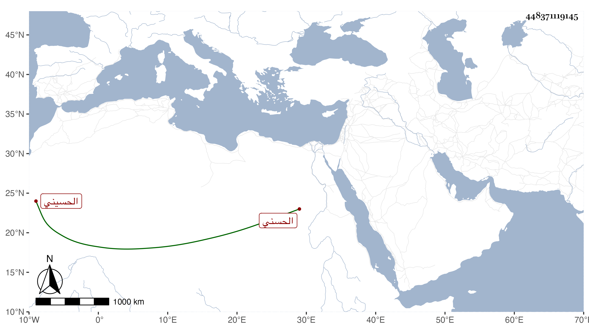

0902Sakhawi.DawLamic.ITO20230111-ara1.EIS1600.448371119145
Biography ID: 448371119145
474
حسن بن محمد بن حسن بن إدريس بن حسن بن علي بن عيسى بن علي بن عيسى بن عبد الله بن محمد بن القسم بن يحيى بن يحيى البدر بن ناصر الدين بن حصن الدين بن نفيس الدين الحسني سبط الشريف النسابة حسن بن علي بن سليمان الحسيني وعم البدر حسن بن محمد بن أيوب الماضي قريبا ويعرف ذلك بالنسابة . ذكره شيخنا في معجمه فقال ذكر لي ابن أخيه يعني المشار إليه أنه اشتغل بالقراءات والفقه وأجيز بجميع ذلك وجمع مجاميع وتجرد مع الفقراء قديما وخرج لهم عن جميع ما خلفه أبوه وهو كثير جدا وتنقلت به الأحوال ، وولى مشيخة الخانقاه البيبرسية مدة وجرت له مع أهلها منازعات فعزل منها ثم أعيد ، وكان قد سمع من الوادياشي والميدومي وغيرهما وحدث أنني سمعت عليه شيئا لكنني لم أظفر به الآن ، والتقيت معه مرارا وكانت فيه شهامة مقداما جريئا نازع نقيب الأشراف مرة ورام الخلافة أخرى واعتل بأنه حسني وأمه من بني العباس قال ووقفت له على تصنيف لطيف في آداب الحمام بخطه قرضه له علماء العصر في سنة سبعين كالبلقيني وابنه والابناسي والطنبذي والمجد إسماعيل الحنفي والغمادي وابن مكين والشرف عبد المنعم البغدادي والجلال نصر الله البغدادي وآخرون ، وخفي على الجميع انه استلبه من مصنف جليل ووقفت عليه لمحمد بن عبد الله الشبلي الدمشقي صاحب آكام المرجان في أحكام الجان وغيره وما أظن المقرضين وقفوا عليه وفيه فوائد كثيرة ولم يكن الشريف في مرتبة من يهتدي لذلك الجمع انتهى . وكذا للشريف أبي المحاسن محمد بن علي الحسيني الدمشقي الالمام في آداب دخول الحمام ، وقال شيخنا في أنبائه ان أصله من سرسة وتكسب بالشهادة مدة وأقام في مشيخة البيبرسية نحو عشر سنين ، ثم ثار عليه الصوفية لسوء سيرته فيهم فعزل عنهم ثم أعيد ، وكان عارفا بأنساب الأشراف كثير الطعن في كثير ممن يدعى الشرف وكان يذكر أن أمه حسينية وقد ساق شيخنا نسبها ونسبه ، ويذكر أيضا أن أم أبيه من بني العباس وهي صفية خاتون ابنة الخليفة المستمسك بالله محمد ابن الحاكم ، وكان يتطاول إلى الخلافة مع جهل مفرط وقلة ديانة . مات في سادس عشر شوال سنة تسع ، قال في الأنباء وقد جاز الثمانين ، وفي المعجم وقد قارب التسعين ممتعا بسمعه وبصره . قلت وقد روى لنا عنه ابن أخيه وجماعة وذكره المقريزي في عقوده .
